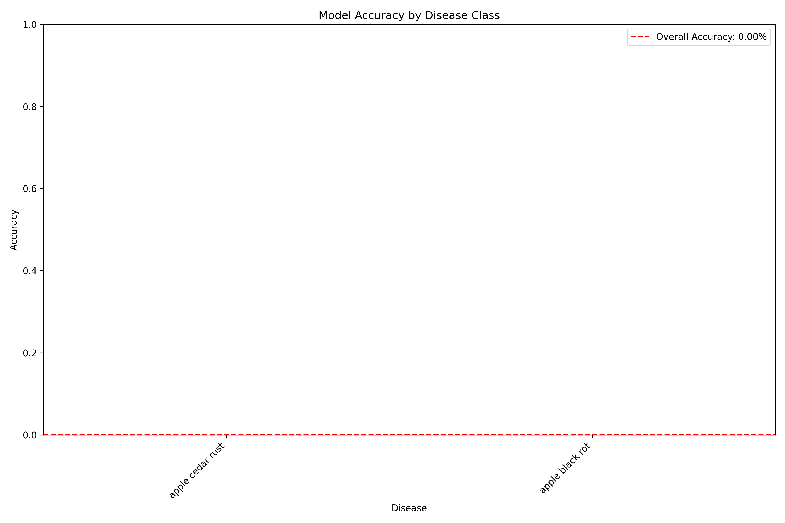
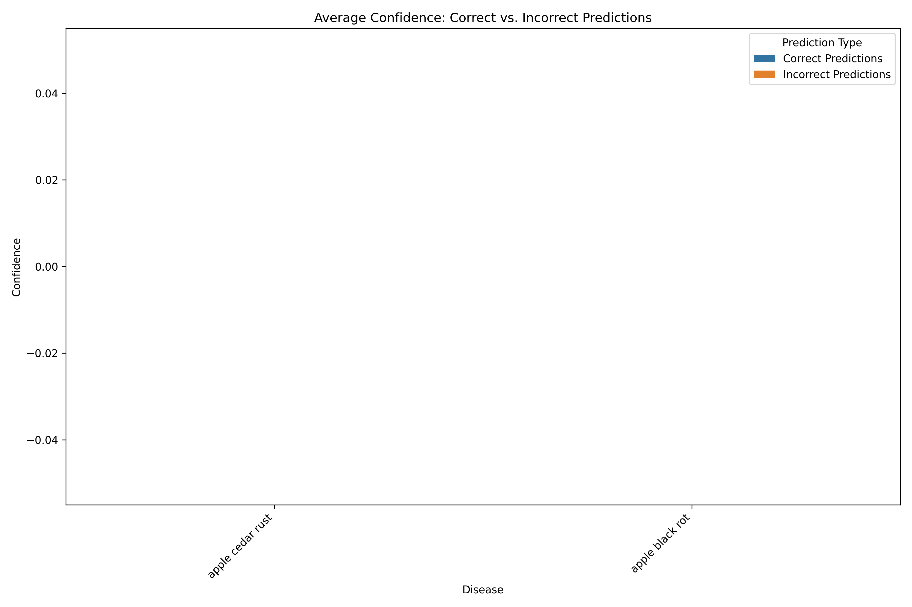

Plant Disease Model Validation Report
Generated on: 2025-05-22 12:34:11
Overall Performance
Performance Visualizations
Accuracy by Disease Class

Confidence: Correct vs. Incorrect Predictions

Disease-Specific Results
| Disease |
Total Images |
Accuracy |
Top-3 Accuracy |
Avg. Confidence (Correct) |
Avg. Confidence (Incorrect) |
| apple cedar rust |
0 |
0.00% |
0.00% |
0.00% |
0.00% |
| apple black rot |
0 |
0.00% |
0.00% |
0.00% |
0.00% |
Recommendations
- The model requires further improvement for reliable real-world use.
- For the specific Cedar Rust vs Black Rot confusion issue:
- Consider collecting more diverse training examples of both diseases
- Implement specialized preprocessing to enhance the distinctive orange spots of Cedar Rust
- Add a post-processing rule to check for characteristic orange color in Cedar Rust images
Next Steps
- Review the most confused disease pairs and consider collecting additional training data.
- For specific confusions, implement specialized preprocessing steps to highlight discriminative features.
- Consider model fine-tuning focused on the problematic classes.
- Evaluate performance improvements by re-running this validation after model updates.